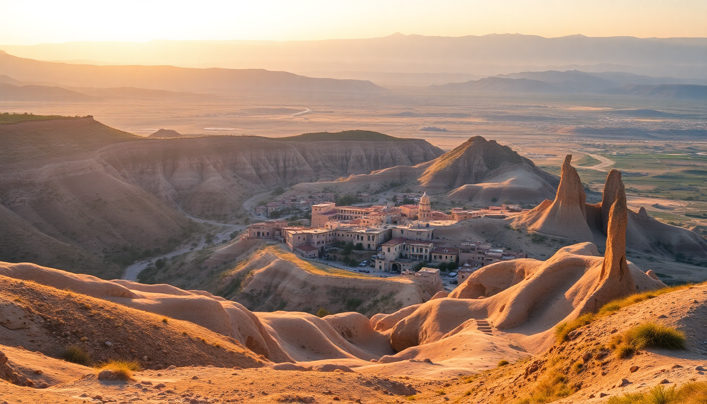

Best Day Trips from Cappadocia: Ihlara, Uchisar & Caves

We spent a week based in Göreme, and after the first sunrise balloon show, we realized the real Cappadocia isn’t just fairy chimneys—it’s the stuff you can reach in a rental car or a shared dolmuş. Here’s what actually worked, what felt like a tourist trap, and what I’d do again.
Why should I go to an underground city, and which one is best?
I’ll be blunt: the underground cities are the most claustrophobic thing I’ve voluntarily done. But they’re also the reason Cappadocia isn’t just another volcanic landscape. These multi-level cave complexes housed thousands of people—complete with churches, wine presses, and ventilation shafts.
Derinkuyu is the deepest (eight levels open to the public). It’s also the most popular, so go early—we arrived at 8:30 AM and had the narrow tunnels to ourselves for about 20 minutes. The stone rolling doors and the “escape tunnel” to the surface are genuinely impressive.
Kaymakli is wider and less deep, which means less ducking and crawling. If you’re tall or prone to panic in tight spaces, pick Kaymakli. We did both, and I’d skip Derinkuyu if you only have one day—Kaymakli’s layout feels more coherent, and the market stalls outside are less aggressive.
Is Ihlara Valley worth the drive from Göreme?
Yes, but only if you like walking. Ihlara is a 16-kilometer canyon with a river at the bottom and rock-cut churches carved into the cliffs. It’s about a 45-minute drive from Göreme, and the road winds through agricultural villages where you’ll see women selling fresh apricots roadside.
We parked at the Ihlara Valley entrance (there are three entry points; we used the main one near the village of Ihlara) and walked south for about three hours to the Belisirma exit. The trail is flat and shaded by poplar trees for most of it—welcome relief in July. The churches (like Kokar Church and Yilanlı Church) have faded frescoes that are free to enter. No queues, no ticket scanners.
The catch: the restaurant at Belisirma, Belisirma Restaurant, served us a trout lunch that was fine but not worth the hype. Eat a big breakfast in Göreme instead.
What’s the deal with Uchisar Castle—should I climb it?
Uchisar Castle is a 60-meter-tall rock formation riddled with rooms and tunnels. It’s the highest point in Cappadocia, and yes, you climb it. The ticket is cheap (around 60 TL when we visited), and the stairs are steep but not dangerous.
The view from the top is the best panoramic of the region—you see the entire Göreme valley on one side and Mount Erciyes on the other. We went at 5 PM and had the summit to ourselves for 20 minutes. If you’re photo-focused, this is the spot.
But here’s the honest take: the castle itself is mostly empty rooms. The “furniture” and “kitchen” displays are modern recreations. It’s a viewpoint, not a museum. I’d do it once, but I wouldn’t build a whole day around it. Combine it with a walk through Uchisar town—the streets are quieter than Göreme, and Saklıkonak Restaurant has a terrace that rivals the castle view for half the price.
How do I visit the Rose Valley and Red Valley in one afternoon?
The Rose and Red Valleys are adjacent, and the best way to see both is a loop hike from the Rose Valley trailhead near Çavuşin. We started at 3 PM, walked through the pink-hued rock formations to the Haçlı Church (a cross-shaped cave church with decent frescoes), then cut over to the Red Valley viewpoint.
The loop takes about two hours at a relaxed pace. The trail is marked with red-and-white paint, but we still got briefly lost near the Aynalı Church—the path splits and the signs are in Turkish only. Download an offline map.
We ended at the Red Valley viewpoint just before sunset. There’s a small tea stand there (cash only, 10 TL per glass). The colors shift from ochre to deep orange as the sun drops behind the hills. It’s free, it’s quiet, and it beats the crowds at the Göreme sunset point.
What’s the best way to see the Göreme Open-Air Museum without the crowds?
The Göreme Open-Air Museum is a UNESCO site with the best-preserved cave churches in the region. It’s also a bus tour magnet. By 10 AM, you’re shuffling through the Dark Church (the one with the vivid frescoes, which costs an extra 50 TL) behind a group of 40 people.
Our trick: we went at 4 PM, two hours before closing. The tour groups clear out by 3:30, and the light inside the churches is better for photos. The Dark Church frescoes are worth the extra fee—they’re the only ones that haven’t been whitewashed or faded. The Apple Church and Snake Church are included in the main ticket and are less crowded.
One warning: the museum is mostly uphill on uneven stone paths. Wear shoes with grip, not sandals. I saw a woman slip on the steps outside the St. Barbara Church and she was not happy.
Should I book a guided tour or DIY these day trips?
We did a mix, and I’d recommend the same for anyone comfortable with a rental car. DIY gives you flexibility—we spent an extra hour at Derinkuyu because we wanted to, and we skipped the pottery demo in Avanos without guilt.
If you don’t drive, the Green Tour (Derinkuyu + Ihlara Valley + Selime Monastery) is the most efficient way to hit the highlights in one day. It’s a long day—our friends on the tour were picked up at 7:30 AM and dropped back at 6 PM—but it covers ground you can’t reach by public bus.
For the underground cities specifically, a guide adds context. Our friend’s guide pointed out the “secret” ventilation shaft in Derinkuyu that we missed on our own. If you’re a history nerd, spring for the guide. If you just want to see the holes in the ground, DIY is fine.
FAQ
What’s the best time of year for these day trips? April to June and September to October. July and August are brutally hot for Ihlara Valley hiking—we did it in July and were drenched by 10 AM. Winter is cold (snow in January) and some trails close. Spring has wildflowers and the rivers are full.
Can I visit Derinkuyu and Ihlara Valley in the same day? Yes, but it’s tight. Derinkuyu is 30 minutes from Ihlara, so you can do the underground city in the morning (8 AM), drive to Ihlara, hike the valley from 11 AM to 2 PM, and be back in Göreme by 4 PM. Eat a packed lunch—the restaurants in Ihlara village are slow.
Are there any safety concerns in the underground cities? Claustrophobia is the main issue. Derinkuyu’s tunnels get very narrow—you’ll crouch through sections that are barely 1 meter high. If you have asthma or panic attacks, stick to Kaymakli. Also, the stairs are uneven and slippery; hold the handrails. No issues with theft or aggressive vendors inside.
Conclusion
- Derinkuyu for depth and history; Kaymakli for comfort and wider tunnels.
- Ihlara Valley is a solid half-day hike—skip the restaurant at Belisirma, bring water.
- Uchisar Castle is a quick 30-minute stop for the best view, not a full attraction.
- Rose Valley loop is free, uncrowded, and better than the Göreme sunset point.
- Göreme Open-Air Museum at 4 PM avoids the crowds; pay extra for the Dark Church.
- DIY with a rental car gives you control; the Green Tour is the fallback if you don’t drive.